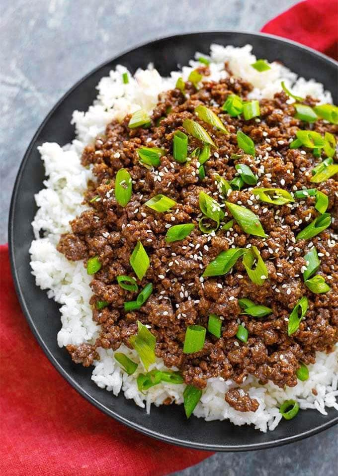

Instant Pot Korean Ground Beef
Back to Home

Description
This is a quick and delicious meal that is one of my favorites to cook up. Very
versatile, you can serve this beef on rice, with lettuce leaves, or even as a taco!
These instructions are for with rice.(you can omit the rice!)
One of my personal favorite preparations is as a taco with red cabbage sliced thin, cilantro,
avocado, lime, and your favorite taco sauce!
Ingredients
- 2 tsp Vegetable Oil
- 1 1/2 lbs Ground Beef or Ground Turkey, 90% lean is best
- 7 cloves Garlic (or 1 Tbsp pressed garlic)
- 1/3 cup Soy Sauce, low sodium
- 1/2 cup Water
- 3 Tbsp Brown Sugar
- 1 Tbsp Sesame Oil
- 1 Tbsp Ginger Root, grated (or 1 tsp powdered ginger)
- 1/2 Asian Pear, grated (optional)
- 3/4 tsp Red Pepper Flakes (or more for some spice)
- 1/2 tsp White Pepper (or black)
For the Rice - I use a 7" x 2.5" pan
- 1 1/2 cups Jasmine Rice, rinsed
- 1 1/2 cups Water
- 2 Tbsp Butter
To Serve
- Tortillas (for tacos)
- Lettuce Leaves (for lettuce wraps)
Garnish
- 2 Green Onions, sliced
- Sesame Seeds
Instructions
- Get all of your ingredients together and measured out. This will make the process go smoother. Also have the rice in the pan and ready to go.
- Turn on the pot's Sauté setting. When it is hot, add the oil, and then the ground beef. Cook beef until it loses the pink color. I use 90% lean beef, so I don't drain, but drain the excess fat if there is more than a few teaspoons.
- Add garlic, soy sauce, water, brown sugar, sesame oil, ginger, Asian pear (if using), red pepper flakes, and white pepper. Mix well, scraping the bottom of the pot to get up any browned bits so you don't get the Burn error.
- Cancel the Sauté setting.
- Set the trivet in the pot over the beef.
- Put the rice, water, and butter in the pan and set on top of the trivet.
- Close the lid and set the steam release knob to the Sealing position.
- Press the Pressure Cook/Manual button or dial and the + or - button or dial to select 3 minutes.
- When the cook cycle is finished, let the pot sit undisturbed for 9 minutes (9 minute Natural Release). Then turn the steam release knob to the Venting position and release the remaining pressure/steam.
- When the pin in the lid drops down, open the lid and use silicone mitts, a pan gripper, or such to carefully remove the pan of rice. Then fluff the rice with a fork.
- Remove the trivet and stir the bulgogi.
- Serve the bulgogi over rice, on lettuce leaves, in taco shells/tortillas, garnish, and enjoy!